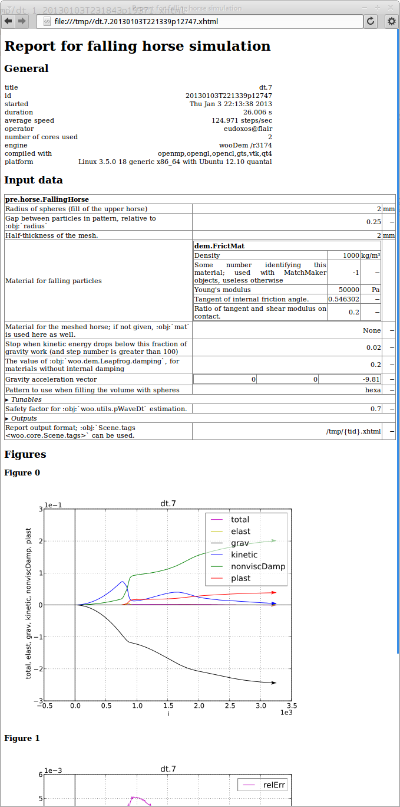
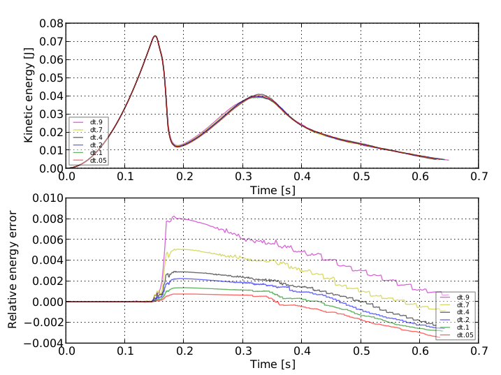

Postprocessing¶
Report¶
Every simulation (not just in batch) may generate report which summarizes its inputs and outputs in a human-readable form; it is usually in the XHTML format. There is one report for each simulation.
{kind=link}
VTK Export¶
Woo exports python script for Paraview which serves to set the visualization pipeline so that important features of DEM are shown. This includes particles, force networks, transparent meshes and movies. This topic is covered in Paraview.
Results database¶
Finished jobs may write some resulting data to results database in the lightweight SQLite format. Saved data include batch information, when was the simulation running, plot information, preprocessor parameters and plot data series.
When running in batch, the database is usually named as the parameter table, only with the results suffix – in the batch example, it is dt.results. Standalone simulations use preprocessor-defined name, FallingHorse uses horse.results.
Note
The database file is never deleted, only appended to. Running the same batch several times will therefore leave results of old batches intact.
SQLite databases can be accessed from virtually any programming language. Contained data are serialized using the neutral JSON representation, so that it can be processed with any language (Python, JavaScript, Matlab, …). Working with the database directly is an advanced topic not covered in this brief introduction. The easiest way is to use XLS dump of the database exaplined in the next section.
XLS dump¶
The database file is (usually) converted to a xls file after every write (dt.xls in the batch example). It contains most data in the database, and is suitable for human post-processing, such as creating ad-hoc figures or aggregating results in a non-automatic manner.
The first worksheet contains each simulation in one column:
title |
dt.05 |
dt.1 |
dt.2 |
batchtable |
dt.xls |
dt.xls |
dt.xls |
batchTableLine |
6 |
5 |
4 |
finished |
2013-01-03 23:21:55.011794 |
2013-01-03 23:21:34.595636 |
2013-01-03 23:20:35.838987 |
sceneId |
20130103T231904p19387 |
20130103T231843p19371 |
20130103T231837p19356 |
duration |
171 |
171 |
118 |
formatNumber |
3 |
3 |
3 |
misc.report |
|||
misc.simulationName |
horse |
horse |
horse |
plots.t |
relErr |
relErr |
relErr |
plots.i.0 |
total |
total |
total |
plots.i.1 |
S.energy.keys() |
S.energy.keys() |
S.energy.keys() |
pre.__class__ |
woo.pre.horse.FallingHorse |
woo.pre.horse.FallingHorse |
woo.pre.horse.FallingHorse |
pre.damping |
0.2 |
0.2 |
0.2 |
pre.gravity.0 |
0.0 |
0.0 |
0.0 |
pre.gravity.1 |
0.0 |
0.0 |
0.0 |
pre.gravity.2 |
-9.81 |
-9.81 |
-9.81 |
pre.halfThick |
0.002 |
0.002 |
0.002 |
pre.mat.__class__ |
woo.dem.FrictMat |
woo.dem.FrictMat |
woo.dem.FrictMat |
pre.mat.density |
1000.0 |
1000.0 |
1000.0 |
pre.mat.id |
-1 |
-1 |
-1 |
pre.mat.ktDivKn |
0.2 |
0.2 |
0.2 |
pre.mat.tanPhi |
0.546302489844 |
0.546302489844 |
0.546302489844 |
pre.mat.young |
50000.0 |
50000.0 |
50000.0 |
pre.meshMat |
None |
None |
None |
pre.pWaveSafety |
0.05 |
0.1 |
0.2 |
pre.pattern |
hexa |
hexa |
hexa |
pre.radius |
0.002 |
0.002 |
0.002 |
pre.relEkStop |
0.02 |
0.02 |
0.02 |
pre.relGap |
0.25 |
0.25 |
0.25 |
pre.reportFmt |
/tmp/{tid}.xhtml |
/tmp/{tid}.xhtml |
/tmp/{tid}.xhtml |
Other worksheets contain number series for each single simulation; worksheets are named using title and sceneId (e.g. dt.7_20130103T231904p19387)
elast |
grav |
i |
kinetic |
nonviscDamp |
plast |
relErr |
t |
total |
|---|---|---|---|---|---|---|---|---|
NaN |
NaN |
NaN |
NaN |
NaN |
NaN |
NaN |
NaN |
NaN |
NaN |
0 |
0 |
0 |
NaN |
NaN |
0 |
0 |
0 |
NaN |
-2.42618457156355E-005 |
10 |
1.94633917852084E-005 |
4.85206822100937E-006 |
NaN |
0 |
0.0025455844 |
5.39152126996832E-008 |
NaN |
-0.0001024389 |
20 |
0.000082005 |
2.04874799044186E-005 |
NaN |
0 |
0.0050911688 |
5.39152127070668E-008 |
NaN |
-0.0002345312 |
30 |
0.0001876789 |
4.6905934128109E-005 |
NaN |
0 |
0.0076367532 |
5.39152127214935E-008 |
NaN |
-0.0004205387 |
40 |
0.0003364848 |
8.41074308920784E-005 |
NaN |
0 |
0.0101823376 |
5.39152127212767E-008 |
NaN |
-0.0006604614 |
50 |
0.000528423 |
0.000132092 |
NaN |
0 |
0.0127279221 |
5.39152126490417E-008 |
NaN |
-0.0009542993 |
60 |
0.0007634933 |
0.0001908596 |
NaN |
0 |
0.0152735065 |
5.39152126933856E-008 |
⋮ |
⋮ |
⋮ |
⋮ |
⋮ |
⋮ |
⋮ |
⋮ |
⋮ |
Aggregate results¶
Simulations may define their own routines for aggregating reults from multiple simulations in an arbitrary manner. Those routines are called (via postHooks argument to woo.batch.writeResults) after every write to the databse – that way, synchronization of the aggregate data is assured.
Usually, they can produce aggregate figure for the whole batch, as in the horse example:
Tip
Report issues or inclarities to github.